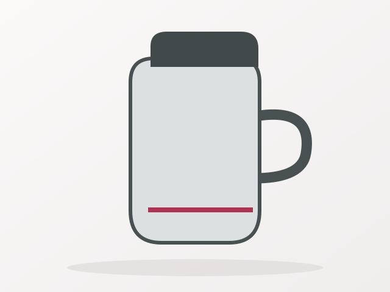
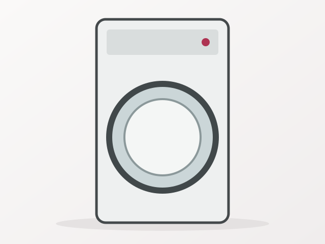
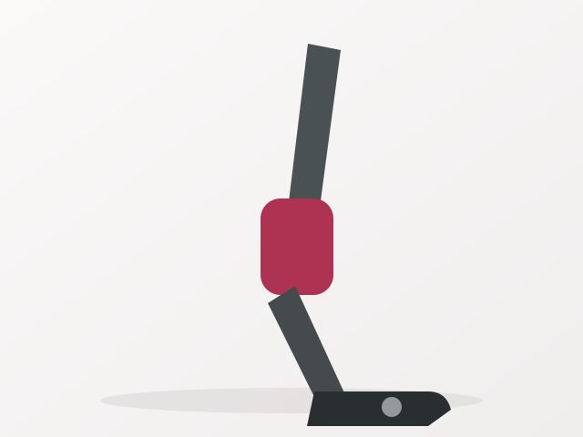

Удобная доставка
До двери и в согласованный день.
Продуманные решения для кухни, уборки и ухода за одеждой — каждый день.
Выбрать технику
БЕРЕЖНЫЙ УХОДЧистота
ПРОСТО И ЧИСТОБольше времени
Практичные решения, которые выбирают чаще всего
До двери и в согласованный день.
Понятная информация о каждой модели.
Подскажем технику под ваши задачи.